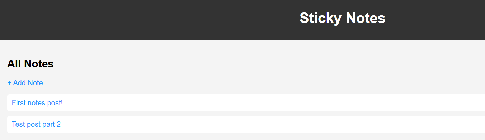
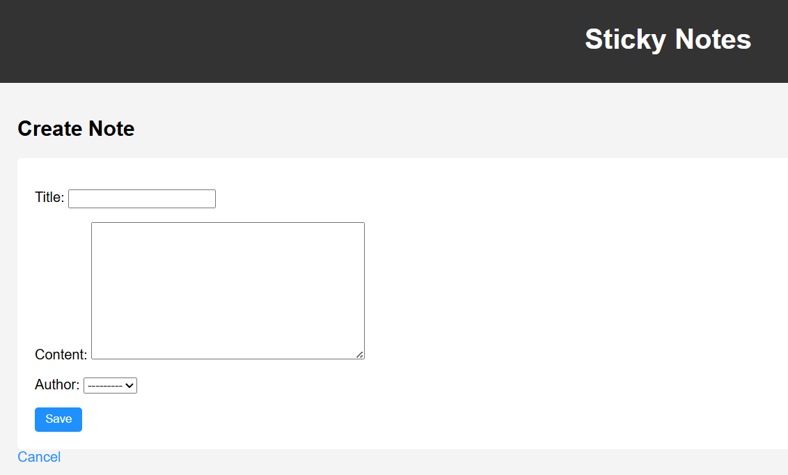
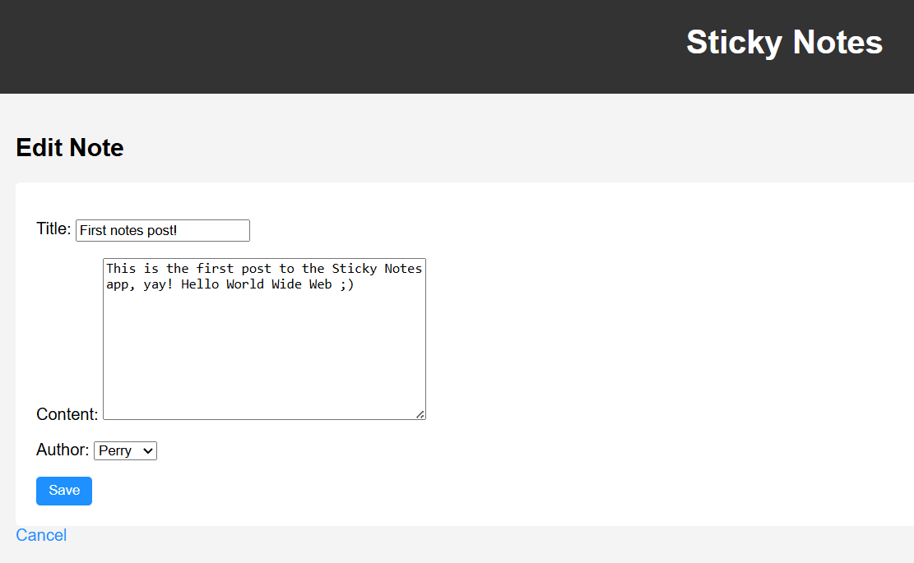
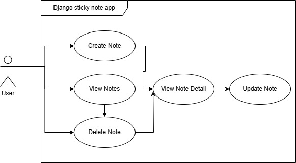
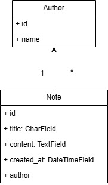
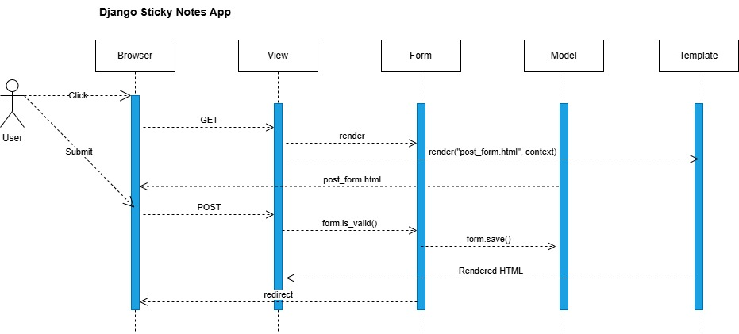

What it does
Create notes fast
Add a new sticky note with a title and content. Your notes are saved and displayed in a clean list.
Edit and update
Update existing notes without losing your flow. Great for quick drafts, reminders, or short logs.
Delete when you’re done
Remove notes you no longer need to keep your workspace tidy.
Built with Django
Demonstrates MVT architecture, CRUD, templates, static files, and migrations — ideal for learning.
Screenshots
These are real screenshots from the running app. Files live in docs/assets/.



Architecture
A quick visual overview of how the app is structured and how users interact with it.



How to run it locally
This is a Django app, so you run it on your machine (GitHub Pages can’t run the backend — this page is the static guide).
-
Clone the repository
git clone https://github.com/PerryRichardson/Sticky-Notes-App.git cd Sticky-Notes-App -
Create and activate a virtual environment
python -m venv .venvWindows (PowerShell):
.venv\Scripts\Activate.ps1macOS/Linux:
source .venv/bin/activate -
Install dependencies
pip install -r requirements.txt -
Run migrations
python manage.py migrate -
Start the server
python manage.py runserverThen open:
http://127.0.0.1:8000/notes/
Handy routes
/notes/— Notes list/notes/create/— Create a note (or use the Create button)/notes/<id>/edit/— Edit a note/notes/<id>/delete/— Delete a note
If your app uses slightly different paths, update this section to match your urls.py.